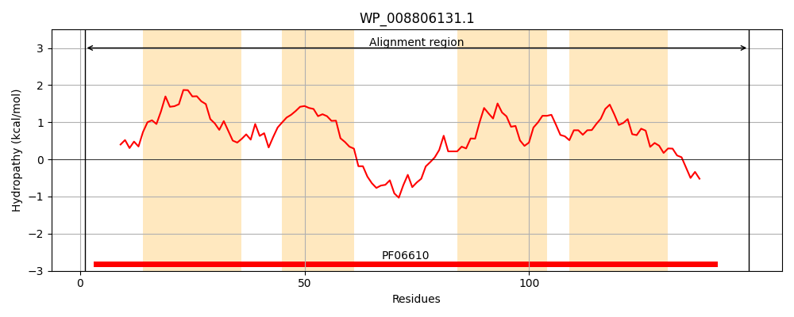
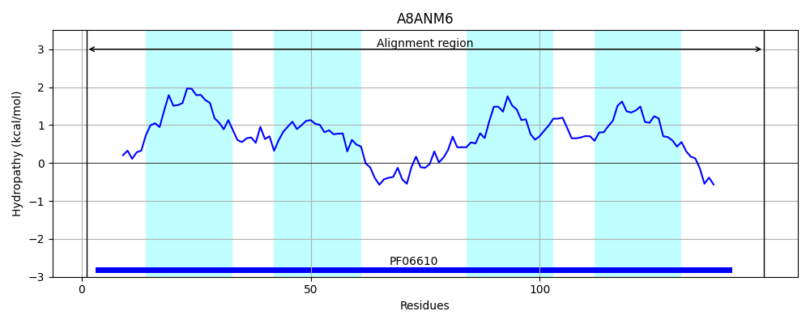
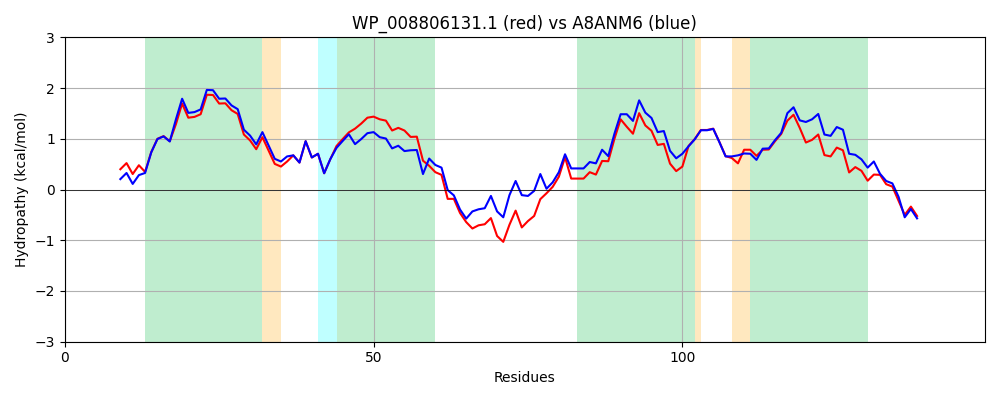

Hit Accession: A8ANM6
Hit TCID: 2.A.104.1.1
Hit Description: gnl|BL_ORD_ID|762 gnl|TC-DB|A8ANM6|2.A.104.1.1 L-alanine exporter AlaE OS=Citrobacter koseri (strain ATCC BAA-895 / CDC 4225-83 / SGSC4696) GN=alaE PE=3 SV=2
Mach Len: 149
e:0.000000
Query TMS Count : 4
Hit TMS Count: 4
TMS-Overlap Score: 3.850000
Predicted Substrates:CHEBI:2539;alanine
BLAST Alignment:
Score: 635 , Bit scores: 249 bits, E-value: 1.5e-86, Alignment length: 149, Percentage identity: 82
Query: 1 MFSAHSRLRHAVADTFAMVVYCTVVNMMIEIFLSGMTFEQSLSSRLVAIPVNIIIAVPYGFYRDFAMRQARRISPAGWMKNMADVLAYVTFQSPVYVAILWSVGADWHQIVAAVSSNLAVSMMMGAAYGYFLDYCRRLFRVAPYQQAKA 149
MFS SRLRHAVADTFAMVVYC+VVNM+IEIFLSGMTFEQSLSSRLVAIPVNI+IA PYG YRD MR AR+ SPA W+KN+ADVLAYVTFQSPVYVAIL +VGADWHQI AAVSSN+ +SM+MGA YGYFLDYCRRLF+V+ Y QAKA
Sbjct: 1 MFSPQSRLRHAVADTFAMVVYCSVVNMLIEIFLSGMTFEQSLSSRLVAIPVNILIAWPYGMYRDAIMRVARKASPASWVKNLADVLAYVTFQSPVYVAILLTVGADWHQITAAVSSNIVISMLMGAVYGYFLDYCRRLFKVSSYHQAKA 149 | Protein Hydropathy Plots: |
|---|
|  |  |
Pairwise Alignment-Hydropathy Plot:
|
|---|
|  |